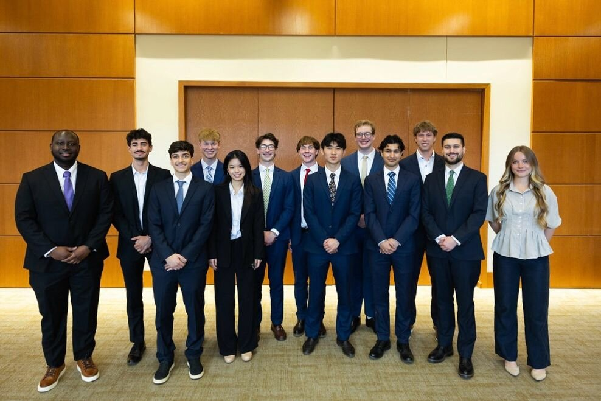

Our Premier Equity Research Program
Bluegrass Capital Research trains students in financial modeling, financial statement analysis, and building differentiated investment theses, taking every analyst through the full equity research process from initial idea to published report.
Our Mission: Equip Students for Wall Street and Beyond
“There are two requirements for success in Wall Street. One, you have to think correctly; and secondly, you have to think independently.”
Benjamin Graham
“The person that turns over the most rocks wins the game.”
Peter Lynch
“Risk comes from not knowing what you’re doing.”
Warren Buffett
“Investment is most intelligent when it is most businesslike.”
Benjamin Graham
Bluegrass Capital Research trains and guides analysts through the full equity research process, from generating an idea to final publication.
Training: Analysts receive training in fundamental analysis, financial modeling, economics, investment thesis development, and stock pitching. Throughout the process, analysts work closely with Senior Analysts who provide personalized mentorship and feedback as they develop their equity research reports and stock pitches.
Experience: Analysts gain hands-on experience by producing equity research reports and stock pitches, giving them tangible work products to showcase to prospective employers. These projects also allow analysts to develop and demonstrate the technical and analytical skills needed for careers in finance.
Publication: Every analyst produces equity research reports published on the BCR website and has the opportunity to compete in the university’s stock pitch competition. Their research is made available to employers, alumni, faculty, peers, and investors.
- Company SelectionSelect a company to research and begin exploring its business, industry, and competitive position.
- Fundamental AnalysisEvaluate the company’s financial performance, business fundamentals, and potential growth opportunities.
- Investment ThesisDevelop an investment thesis supported by research, financial modeling, and valuation.
- Research PresentationPresent your findings through a published equity research report and stock pitch.
Research From the Heart of the Bluegrass.
Lexington, Kentucky
Research by Our Analysts
Every report is written, modeled, and defended by a student analyst. Click a report to read it in full.
2026 University Stock Pitch Competition
All Represented by BCR
Every finalist team at the University’s 2026 Stock Pitch Competition included at least one past or present Bluegrass Capital Research analyst, and the first and second place teams were composed entirely of BCR members.

Alumni Placements
Bluegrass Capital Research alumni have gone on to secure roles in investment banking, private equity, wealth management, and other financial roles.
Leadership & Senior Analysts
Want to publish your own research?
Analysts are competitively selected each academic year. Reach out to learn about the next application cycle.